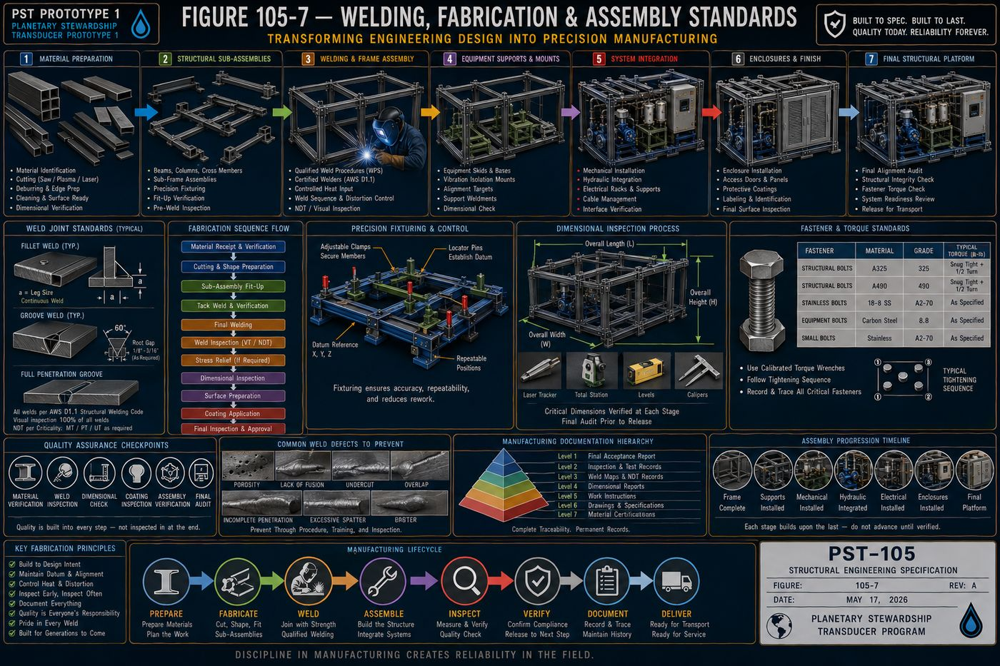
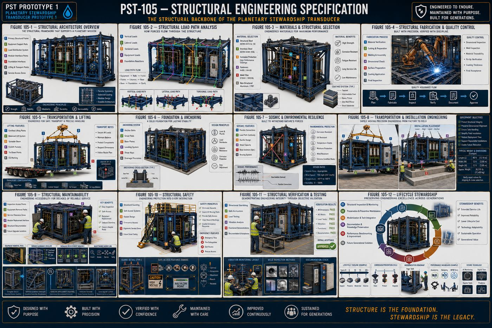

Part of an Eight-Volume Set
This is the fifth of eight detailed volume pages expanding on [[planetary-stewardship-transducer]] (AW-04). PST-105 defines the physical skeleton that the mechanical assemblies in [[pst-101-mechanical-systems]] (AW-10), the electrical infrastructure in [[pst-102-electrical-systems]] (AW-11), the hydraulic systems in [[pst-103-hydraulic-systems]] (AW-12), and the controls architecture in [[pst-104-controls-automation]] (AW-13) all mount to and rely on.
Source Document Note
The source specification's own table of contents lists a Chapter 4, "Enclosures & Protective Structures," and the transition text between Chapter 3 and Chapter 5 references it directly. That chapter was never actually written in the source document, which proceeds directly from Chapter 3 to Chapter 5. This page reflects that gap honestly rather than inventing the missing chapter's content; the eleven chapters that do exist are covered in full below.
PST-105 defines the complete structural architecture of Prototype 1: the design philosophy governing every structural member, the primary frame that forms the platform's permanent chassis, the equipment support structures that interface the frame with every major subsystem, the load analysis program that demonstrates structural integrity through engineering calculation rather than assumption, the materials and corrosion protection strategy for decades of service, the welding and fabrication standards that turn design into precision manufacturing, the transportation and installation engineering that moves the platform safely from factory to field, the maintainability philosophy that keeps the structure serviceable for generations, the structural safety systems protecting every person who interacts with the platform, the verification and testing program that validates the completed structure, and the lifecycle stewardship philosophy that governs the structure's entire operational life.
The eleven written chapters are covered in full below, following the specification's own structure: purpose, engineering intent, philosophy, architecture, and a chapter summary.
I. Structural Design Philosophy
The structural system is more than a supporting frame: it is the physical foundation that integrates every mechanical, hydraulic, electrical, and automation subsystem into a unified, serviceable, and durable platform, with every structural member contributing to strength, stability, accessibility, maintainability, and long-term reliability. Prototype 1 uses a modular structural architecture rather than a permanently fixed construction, providing predictable load paths, repeatable fabrication, standardized connections, and future modification capability, so the structure remains understandable decades after construction.
Every applied load, equipment weight, hydraulic forces, dynamic pump loading, motor torque, transportation loads, follows a clearly identifiable structural path from mounted equipment to the primary base frame, kept direct, predictable, and fully documented. The platform is organized into replaceable structural modules, the base frame, pump skid, filtration module, control cabinet support, and instrumentation rack, each independently removable wherever practical without major structural disassembly, and the structure is designed to support maintenance rather than obstruct it, unobstructed service access, removable panels, and accessible lifting points, treating maintenance efficiency as a structural design requirement rather than an afterthought. Prototype 1 is intended for decades of continuous operation, so durability is achieved through conservative engineering rather than excessive structural mass, fatigue resistance, corrosion protection, and dimensional stability, and structural components use standardized engineering practices, common members, repeatable mounting patterns, and documented tolerances, wherever practical to simplify manufacturing and future upgrades. The architecture anticipates future growth through reserved mounting locations and standardized attachment points, so expansion occurs through addition rather than reconstruction.
II. Primary Frame Architecture
The primary frame is the central structural member of the complete platform, engineered as a permanent structural foundation rather than a simple equipment skid, supporting all static equipment loads, resisting operational vibration, and maintaining geometric alignment throughout the service life of the machine. Prototype 1 uses a rigid, modular base-frame architecture consisting of longitudinal structural rails, transverse cross members, reinforced equipment mounting beams, cabinet support structures, utility routing corridors, integrated lifting interfaces, and expansion attachment points, balancing structural rigidity with accessibility.
The longitudinal rails form the principal load-carrying members, establishing the structural spine of the platform through continuous load transfer, minimal deflection, and torsional resistance, while cross members distribute loads across the frame and increase torsional stiffness, with spacing reflecting equipment loading rather than arbitrary intervals. Dedicated equipment mounting beams provide precision attachment surfaces for pump skids, filtration systems, hydraulic manifolds, control cabinets, and instrumentation racks, maintaining dimensional accuracy throughout the platform's operational life, and frame stiffness is designed to minimize dynamic flexing, equipment misalignment, vibration amplification, and instrumentation drift, since structural rigidity supports every engineering discipline simultaneously. The primary frame incorporates protected pathways for hydraulic piping, electrical conduit, and instrumentation wiring, remaining protected while preserving maintenance accessibility, and Prototype 1 is engineered for safe transportation without structural modification, integrated forklift pockets, certified crane lifting points, and load-balanced lifting geometry, treating transportation loads as engineering design loads rather than exceptional conditions. The frame supports efficient field installation through adjustable leveling points, anchor interfaces, and alignment reference surfaces, and anticipates future structural growth through reserved mounting rails and expansion bolt patterns, so expansion preserves the integrity of the original frame. The primary frame is intended to remain in service throughout the operational life of Prototype 1, expected to support multiple generations of subsystem upgrades without requiring replacement.
III. Equipment Support Structures
Equipment support structures provide the direct interface between the primary structural frame and every operational subsystem, maintaining precise alignment, distributing localized loads, reducing vibration transmission, and allowing modular replacement without compromising structural integrity. Each support structure is engineered as an integral component of the complete platform rather than an independent mounting bracket: equipment is never mounted directly to the primary frame without engineered intermediary support structures where required.
Pump support structures maintain rigid alignment under both static and dynamic loading through reinforced mounting beams, precision-machined surfaces, and adjustable alignment provisions, with pump alignment expected to remain stable throughout the service life of the platform. Filtration systems, given their operational weight and maintenance requirements, receive dedicated cartridge support frames and reinforced base plates that facilitate routine servicing without disturbing adjacent equipment, and hydraulic manifolds are supported independently of connected piping wherever practical, since hydraulic piping is never intended to function as structural support. Electrical and control cabinets receive structurally isolated support systems, reinforced platforms and vibration reduction, keeping electrical equipment protected from unnecessary structural vibration, and instrumentation mounting structures prioritize measurement integrity, stable mounting surfaces and isolation from excessive vibration, since instrumentation accuracy depends on structural stability. Utility equipment, air preparation systems, drain assemblies, and chemical dosing equipment, uses standardized structural mounting systems, and support structures are designed to improve maintenance rather than complicate it, tool clearance, equipment removal paths, and standardized fasteners, considered during structural design rather than added after fabrication. Equipment support structures anticipate future modifications through reserved mounting interfaces and modular attachment plates, so future upgrades integrate with minimal structural modification.
IV. Load Analysis and Structural Integrity
The structural system safely supports all anticipated operational, transportation, installation, maintenance, and environmental loads while maintaining dimensional stability and equipment alignment, with structural integrity demonstrated through engineering analysis rather than assumed through conservative construction alone. Prototype 1 is evaluated as an integrated structural system, considering the interaction between the primary frame, equipment supports, enclosures, hydraulic and electrical systems, dynamic equipment loading, and transportation forces, since the complete platform behaves as one structural assembly rather than a collection of individual components.
Static load analysis establishes the baseline structural requirements, equipment dead weight, fluid weight, filter loading, and maintenance personnel, with the structure maintaining acceptable stress levels under maximum anticipated static loading, while dynamic load analysis incorporates pump operation, motor torque, hydraulic pulsation, and emergency stopping as primary rather than secondary considerations. Transportation introduces unique structural demands, highway vibration, braking forces, cornering loads, and crane lifting, that shall not permanently alter structural geometry, and structural vibration is analyzed to minimize resonance, protect instrumentation, and maintain pump alignment, keeping structural natural frequencies appropriately separated from expected operating frequencies wherever practical. Structural deflection remains within established engineering limits affecting equipment alignment, pipe stress, and instrument calibration, and fatigue performance considers repeated pump cycles, vibration exposure, valve operation, and thermal cycling, with long-term durability considered during initial design. Appropriate safety margins account for material variability, manufacturing tolerances, and future modifications, providing engineering resilience rather than excessive conservatism, and multiple complementary verification methods, engineering calculations, finite element analysis, and prototype testing, improve engineering confidence beyond any single technique. Structural performance is periodically reassessed throughout the operational life of Prototype 1, documented inspections, vibration trending, and fatigue monitoring, since engineering confidence increases through observation over time.
V. Materials and Corrosion Protection
Material selection extends beyond mechanical strength: every structural component is evaluated for durability, corrosion resistance, manufacturability, maintainability, lifecycle cost, and environmental exposure, with the objective of preserving structural integrity throughout decades of continuous operation with predictable inspection and maintenance practices. Prototype 1 selects materials according to engineering function rather than uniformity, with each component chosen based on mechanical loading, environmental exposure, corrosion potential, and lifecycle performance.
The primary structural frame uses high-strength structural steel selected for predictable mechanical performance and fabrication consistency, high yield strength, excellent weldability, and fatigue resistance, prioritizing durability over minimum material weight since it forms the permanent backbone of the platform. Components exposed to moisture, washdown, or chemically aggressive environments use corrosion-resistant materials where appropriate, stainless steel hardware, instrumentation brackets, and drain assemblies, reducing long-term maintenance without unnecessarily increasing overall structural cost. Every exposed structural surface receives an engineered protective coating system, surface preparation, corrosion-resistant primer, an intermediate protective layer, and a high-durability finish coat, treated as an engineered structural system rather than a cosmetic finish, and coating performance depends on proper surface preparation, cleaning, degreasing, and abrasive blasting, more than coating thickness alone. Fasteners are selected according to structural loading and environmental exposure, treated as engineered structural components rather than commodity hardware, and where dissimilar metals are used together, the design minimizes galvanic corrosion through compatible material selection and electrical isolation where appropriate. Prototype 1 is designed for operation in diverse environmental conditions, rain, humidity, dust, ultraviolet exposure, and freeze-thaw cycling, incorporated into initial design rather than addressed after deployment, and protective systems remain inspectable throughout the life of the platform, supporting future structural refurbishment, localized coating repair and component replacement, without major reconstruction: the platform is designed to be renewable rather than disposable.
VI. Welding, Fabrication, and Assembly Standards
The structural performance verified during design can only be achieved through disciplined manufacturing practices, so fabrication and assembly are treated as engineering processes requiring the same precision, documentation, and verification as the design itself. Prototype 1 is fabricated using standardized manufacturing practices emphasizing precision, repeatability, and maintainability, controlled fabrication sequences, standardized structural details, and documented inspections, eliminating unnecessary variability while supporting efficient production.
Structural materials are prepared prior to fabrication, material identification, cutting, deburring, edge preparation, and dimensional verification, establishing the foundation for high-quality fabrication, and all structural welding follows documented procedures appropriate to the selected materials and service conditions, qualified welding procedures, qualified personnel, and distortion control, treating weld quality as a structural requirement rather than merely a manufacturing objective. Dimensional accuracy is maintained throughout fabrication and assembly through primary datum references, precision fixturing, and sequential measurement, since every major subsystem depends on structural alignment, and Prototype 1 is assembled using a logical progression, base frame completion, equipment support installation, structural verification, mechanical and hydraulic integration, electrical integration, enclosure installation, and final inspection, minimizing rework and preserving accessibility. Mechanical fasteners are installed according to documented practice, correct fastener grade, specified torque values, and verified tightening sequence, since fastened joints are engineered connections requiring the same discipline as welded joints, and quality assurance accompanies every stage of fabrication, material verification, weld inspection, dimensional inspection, and coating inspection, building quality into the process rather than inspecting it into the finished product. Manufacturing records, material certifications, welding records, dimensional verification, and nonconformance records, remain permanently associated with the completed platform, supporting future maintenance, upgrades, and engineering analysis, and the fabrication philosophy supports future production through modular subassemblies and repeatable welding fixtures, establishing manufacturing practices that can support future generations of the platform.
VII. Transportation and Installation Engineering
Prototype 1 is engineered not only for operation but also for safe handling throughout its lifecycle: transportation and installation introduce unique structural demands that differ significantly from normal operating conditions, treated as critical engineering events requiring dedicated structural provisions and documented procedures. The platform shall arrive at its installation site in the same structural condition in which it left the fabrication facility, transportable without structural modification through balanced weight distribution, protected equipment, and repeatable lifting procedures, with transportation considered an extension of the engineering process rather than a separate logistical activity.
Dedicated lifting interfaces, certified lifting lugs, crane attachment points, balanced lift geometry, and a clearly identified center of gravity, are integrated into the primary structural frame, transferring lifting forces directly into the primary structural members, and Prototype 1 supports safe forklift handling through reinforced forklift pockets, clearly marked lift zones, and load distribution plates, avoiding localized structural damage. Transportation exposes the platform to vibration, shock, and environmental conditions, addressed through equipment restraints, temporary shipping braces, and protective covers, preserving both structural and operational readiness, and the platform is designed for efficient field installation through structural leveling pads, anchor bolt interfaces, and alignment reference points, proceeding through a standardized engineering sequence. Structural alignment is verified following installation, frame levelness, equipment alignment, and pump shaft alignment, confirming transportation has not compromised structural precision, and where permanent installation is required, the platform uses engineered anchoring systems accounting for foundation compatibility, load transfer, and thermal movement, stabilizing the platform while preserving maintainability. Installation concludes only when the platform is fully prepared for operational commissioning, shipping restraint removal, structural inspection, and utility verification, and Prototype 1 is designed to support future relocation through reusable lifting interfaces and documented relocation processes, extending the useful life of the platform.
VIII. Structural Maintainability
Maintainability is a fundamental engineering requirement rather than a secondary operational consideration: every structural decision supports safe inspection, efficient maintenance, simplified equipment replacement, and future system upgrades without compromising structural integrity, engineered to remain serviceable throughout multiple decades of continuous operation. Prototype 1 is designed around the principle that every major component will eventually require inspection, adjustment, refurbishment, or replacement, providing direct maintenance access, unobstructed equipment removal, and standardized service interfaces engineered into the platform from the beginning rather than created through later modifications.
Routine structural inspections are performed without unnecessary disassembly at representative points, primary structural welds, bolted joints, protective coatings, and corrosion-prone interfaces, improving preventative maintenance effectiveness, and major equipment, pump modules, filtration systems, hydraulic manifolds, and electrical cabinets, is removable without requiring structural reconstruction, with removal paths clearly defined throughout the life of the platform. The structural layout preserves sufficient working space for maintenance personnel, tool access, lifting equipment, and safe component handling, verified during both design and installation, and structural subassemblies, mounting brackets, equipment supports, and access panels, support replacement without unnecessary disturbance of adjacent systems, minimizing downtime while preserving engineering consistency. Maintenance activities are supported by complete engineering documentation, structural drawings, weld maps, fastener schedules, and modification logs, preserving engineering knowledge across multiple generations of operators, and the platform accommodates future improvements, additional instrumentation, larger filtration systems, and automation enhancements, without requiring extensive structural redesign, extending its useful life. Maintainability directly influences total lifecycle cost through reduced maintenance time, lower labor requirements, and extended structural life, and the maintenance philosophy supports future evolution through standardized mounting interfaces and documented upgrade pathways, so every generation of Prototype 1 becomes easier to maintain than the last.
IX. Structural Safety
Every structural component contributes not only to the mechanical integrity of the platform but also to the protection of personnel during operation, inspection, maintenance, transportation, and future upgrades, with safety incorporated into the structure itself rather than added after the engineering is complete. Prototype 1 follows a layered structural safety philosophy, hazard elimination through design, physical guarding, safe equipment spacing, controlled access, and administrative procedures, eliminating hazards through engineering rather than relying solely on operator behavior wherever practical.
Protective guarding isolates personnel from hazardous mechanical components, rotating pump couplings, drive assemblies, and pinch points, providing protection without unnecessarily restricting inspection or maintenance, and the structural design provides secure access for routine operation and maintenance, non-slip walking surfaces, stable service platforms, and handrails where required, so personnel are never required to improvise safe access. Structural elements clearly communicate potential hazards, equipment labels, pinch-point indicators, and weight information, supplementing engineered protection with visual communication, and emergency response remains unobstructed, emergency equipment access, unrestricted emergency stop locations, and clear escape paths, supporting rapid intervention under adverse conditions. The structural architecture minimizes unnecessary physical strain, comfortable working heights, reach distances, and equipment removal ergonomics, improving both safety and maintenance quality, and maintenance activities do not compromise structural stability during temporary equipment removal, uneven loading, or partial disassembly, with the platform remaining structurally stable throughout all anticipated maintenance operations. Prototype 1 is designed to support future structural safety technologies, smart safety sensors, automated personnel detection, and digital lockout integration, so the structural safety philosophy evolves alongside technology, and safety remains a permanent engineering responsibility through routine safety inspections, documented hazard assessments, and continuous ergonomic improvement.
X. Structural Verification and Testing
Verification confirms that every structural component has been manufactured, assembled, installed, and commissioned in accordance with the approved engineering design, providing objective evidence that the completed platform satisfies its intended structural performance, safety, durability, and maintainability requirements. Verification is not a single event; it is a continuous engineering discipline that begins during fabrication and extends throughout the operational life of the platform, verified through multiple complementary methods, visual inspection, dimensional measurement, material certification, weld evaluation, structural load testing, and vibration analysis, rather than relying on any single inspection technique.
Critical structural dimensions are confirmed throughout fabrication, assembly, and installation, overall frame geometry, equipment mounting locations, structural squareness, and levelness, ensuring every subsystem integrates according to engineering intent, and structural welds are evaluated according to documented inspection procedures, visual examination, weld profile verification, and discontinuity identification, with critical structural welds receiving additional non-destructive evaluation where appropriate. All structural materials remain traceable throughout fabrication, material certifications, grade confirmation, and heat number traceability, preserving engineering confidence throughout the platform lifecycle, and representative structural loading, static loading, operational loading, and lifting verification, demonstrates satisfactory performance, validating analytical assumptions through physical demonstration. The completed platform is evaluated during representative operating conditions, frame vibration, equipment vibration, and structural resonance, with measured vibration remaining consistent with engineering objectives, and structural systems support normal operational activities, equipment removal, access panel operation, and door alignment, forming part of structural verification alongside pure strength testing. Structural acceptance requires documented confirmation, structural compliance, inspection completion, test acceptance, and resolved outstanding deficiencies, signifying readiness for operational service, and Prototype 1 supports periodic structural re-verification throughout its operational life, scheduled inspections, corrosion monitoring, and vibration trending, as verification continues while the platform evolves.
XI. Lifecycle Stewardship
Structural engineering does not conclude with fabrication, installation, or commissioning: the completed platform enters a new phase in which inspection, maintenance, refurbishment, modernization, and engineering knowledge continually preserve and enhance the value of the structural system. Prototype 1 is regarded as a continuously evolving engineering asset, maintained proactively rather than reactively through scheduled inspections, preventive maintenance, structural monitoring, and performance benchmarking.
Routine structural evaluations preserve long-term integrity, weld condition, protective coatings, corrosion monitoring, and foundation connections, with inspection intervals established according to operating conditions and documented engineering practice. Structural preservation extends beyond repair, protective coating renewal, corrosion mitigation, and structural cleaning, minimizing degradation before corrective action becomes necessary, and Prototype 1 accommodates future engineering improvements, advanced instrumentation, improved equipment modules, and new automation systems, respecting the original structural philosophy while incorporating new engineering capabilities. Structural knowledge remains permanently documented, inspection history, maintenance records, structural modifications, and performance history, preserving institutional knowledge across generations of operators and engineers, and structural performance is continuously evaluated against benchmarks, structural condition, corrosion progression, and vibration history, transforming historical experience into engineering improvement. Prototype 1 remains compatible with future technologies throughout its operational life, autonomous inspection systems, AI-assisted maintenance planning, and digital twin integration, extending the useful life of the structural platform, and structural stewardship contributes directly to environmental sustainability, extended equipment life and reduced material consumption, since the most sustainable structure is one that continues serving reliably for generations. Structural engineering is ultimately an act of stewardship: preservation over replacement, knowledge over assumption, and modernization over obsolescence, so the structure remains an evolving engineering asset throughout its complete operational life.


Protected — Detailed Engineering Package
Exact structural member sizes and steel grades, finite element analysis results and calculated safety factors, weld procedure specifications, coating thickness specifications, lifting point load ratings, and the bill of materials are held under NDA pending requirements freeze and physics validation, consistent with the source specification's own stated pre-construction status.
Full Specification Available Under Signed NDA ↗Documentation Summary
The structural design philosophy, the primary frame architecture, the equipment support structure framework, the load analysis methodology, the materials and corrosion protection strategy, the welding and fabrication standards, the transportation and installation engineering, the structural maintainability philosophy, the structural safety system, and the verification and lifecycle stewardship programs are original work product of Joshua Farrior, developed under CHRISTOS™ Energy, Technology & Harmonic Design Consulting, LLC.
Held under NDA pending further development: exact structural member sizes, steel grades, and connection details; finite element analysis models and calculated safety factors; weld procedure specifications and qualification records; protective coating system specifications and thickness requirements; certified lifting point load ratings; the complete engineering drawing package; the bill of materials; and fabrication and acceptance test procedures beyond the verification stages described above.
© 2026 Joshua Farrior · Christos™ Energy, Technology & Harmonic Design Consulting, LLC · All Rights Reserved · Business ID: 202511071941923 · Christos™ trademark registered on the USPTO Principal Register · christosenergy.com